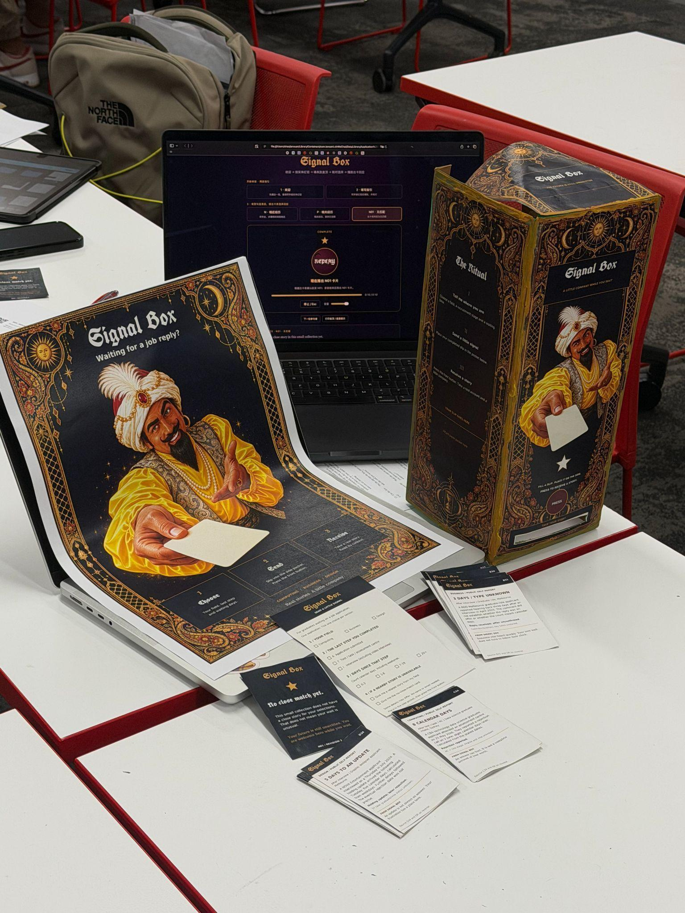

Signal Box.
I built two prototypes to help international students make sense of waiting for a job reply through another applicant’s experience.
My role. I interviewed three students, designed the physical Signal Box and built its audio website. After analysing the usability feedback, I built Lucky Box, a second website that demonstrates the revised interaction.
01 / WHAT I BUILT
From Signal Box to Lucky Box
VERSION 1 / CLASSROOM PROTOTYPE
Signal Box
I built a physical box, printed slips and story cards, and a website that let the facilitator play instructions and cue the card reveal.

VERSION 2 / AFTER USABILITY FEEDBACK
Lucky Box
I built a separate interactive website so visitors could try the revised flow themselves.
Try the revised Lucky Box- Participants hesitated or pressed again
- I added light and sound to confirm the press.
- Readers needed a prompt to turn the card over
- I redesigned it as a two-sided, tarot-style card with a visible prompt to turn it for the source.
- A participant wanted to share their own story
- I made the QR code open two choices: check the original source or optionally share a waiting experience.
The website uses one fixed example to demonstrate the revised flow. Follow-up usability testing is the next step.
02 / RESEARCH AND TESTING
Interviews and prototype testing
Interviews. I reviewed existing research and mapped who could influence the wait. In each interview, I asked the participant to walk me through one application, from the last employer contact to what they checked and what made them act.
Prototype testing. In four exploratory sessions, participants thought aloud as they described their situation on a slip, pressed a button and received a story card. A facilitator selected a matching card behind the box (Wizard of Oz). For the session I reviewed, I recorded task times, hesitation, prompts and whether the participant found the source on the back of the card.
Questionnaires. I evaluated the prototype with the 10-item System Usability Scale (SUS), a worry rating before and after the test, and a trust rating after participants saw the story’s source. Three sessions yielded complete responses.
03 / RESULTS FROM VERSION 1
What the first test showed
- SUS score
- 76.7 / 100
- Worry before and after
- 4.67 → 2.67 / 5
- Trust after seeing the source
- 4.33 / 5
These scores describe three complete responses from the first prototype. The next test would check whether the revised card helps readers understand the story as one person’s experience and find its source without a prompt.